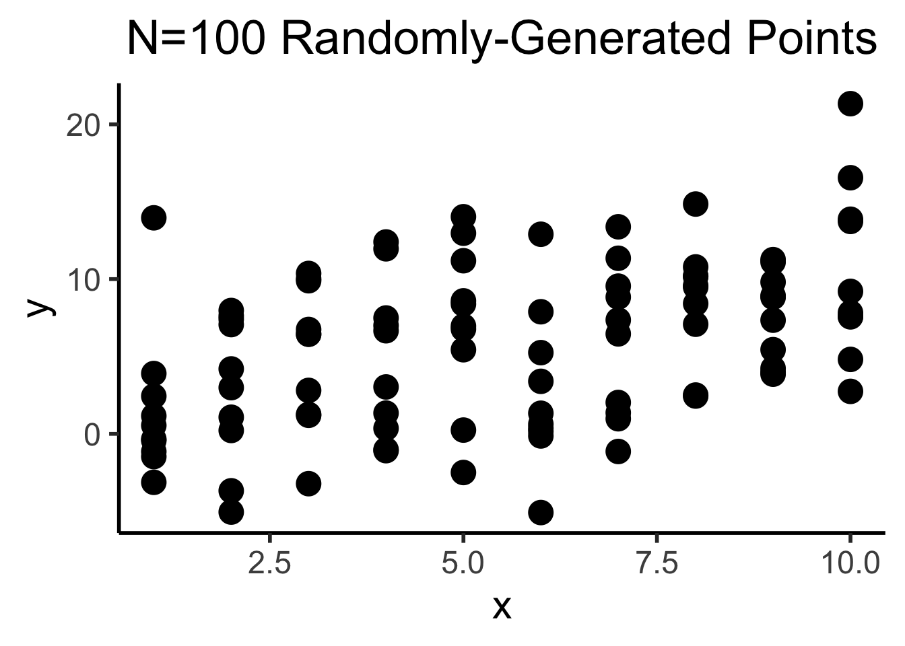
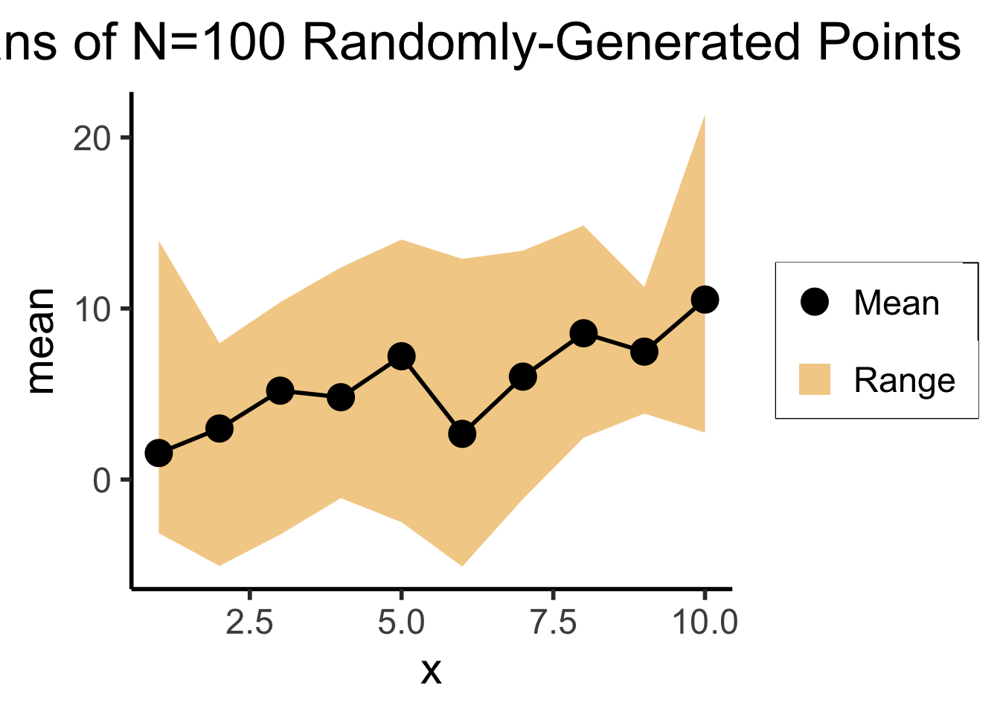
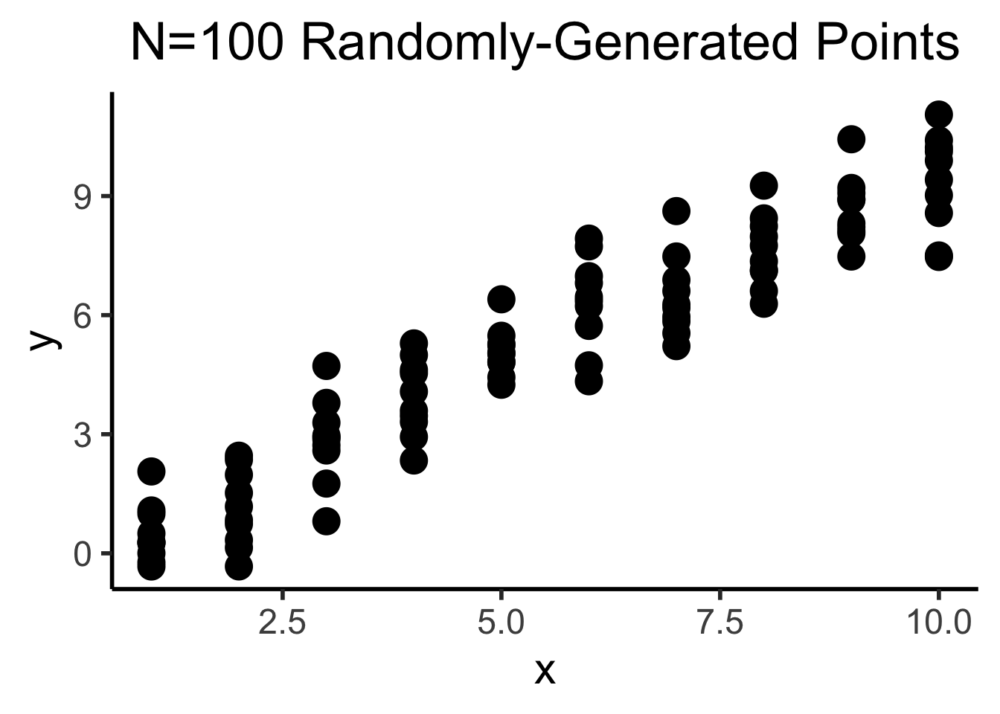
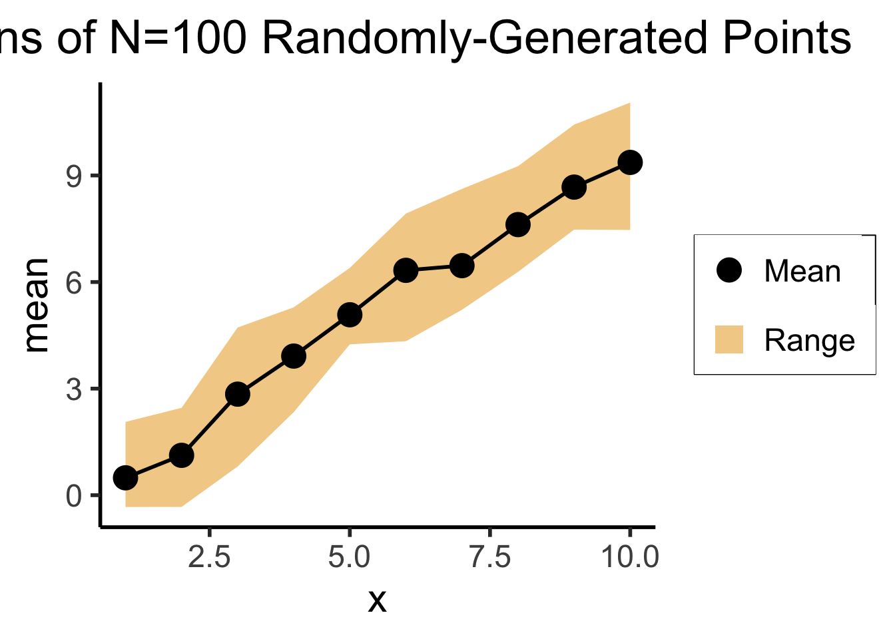
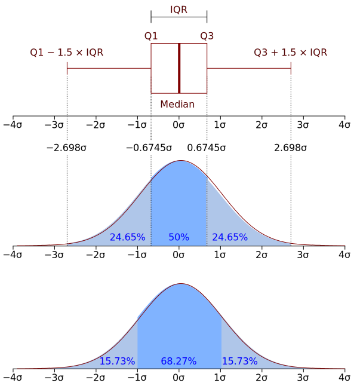
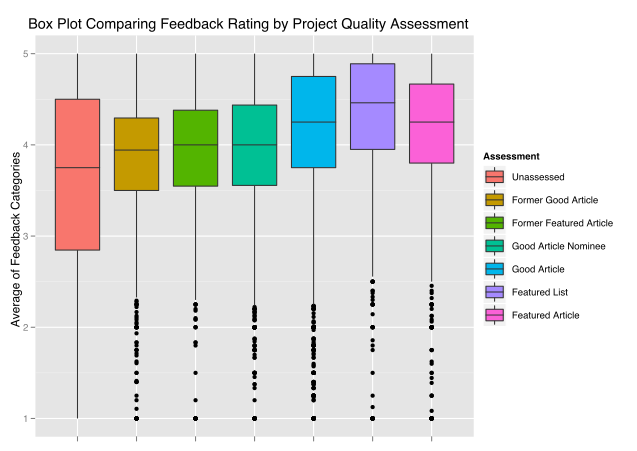
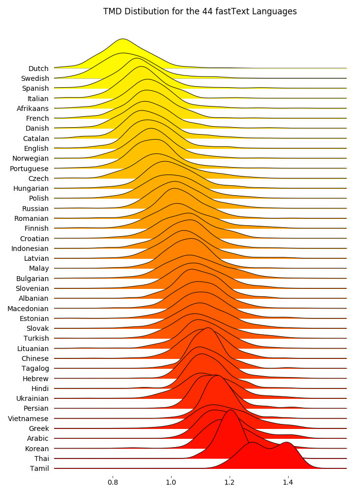
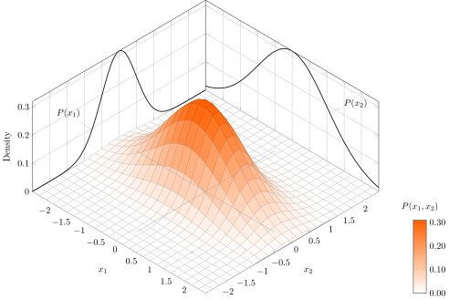
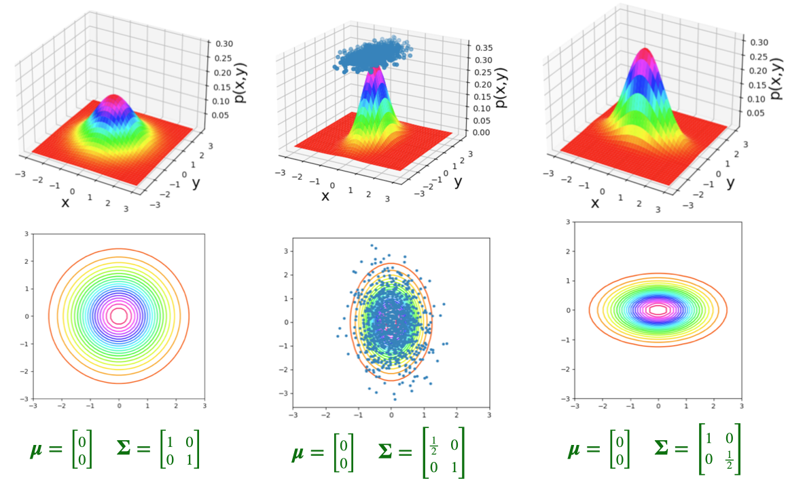

source("../dsan-globals/_globals.r")Week 3: Random Variables
DSAN 5100: Probabilistic Modeling and Statistical Computing
Section 03
Class Sessions
Schedule
| Start | End | Topic | ||
|---|---|---|---|---|
| Lecture | 12:30pm | 12:40pm | Recap → | |
| 12:40pm | 1:20pm | What is Conditional Probability? → | ||
| 1:20pm | 2:00pm | Bayes’ Theorem and its Implications → | ||
| Break! | 2:00pm | 2:10pm | ||
| Lab | 2:10pm | 2:50pm | Lab 2 Demo | |
| 2:50pm | 3:00pm | Lab 2 Assignment Overview |
Probability Fundamentals
Logic, Sets, and Probability
Deep connection between objects and operations of logic, set theory, and probability:
| Logic | Set Theory | Probability Theory | |
|---|---|---|---|
| Objects | Predicates \(p, q \in \{T, F\}\) |
Sets \(S = \{a, b, \ldots\}\) |
Events \(E = \{TT, TH, HT, HH\}\) |
| Conjunction | And (\(\wedge\)) \(p \wedge q\) |
Intersection (\(\cap\)) \(A \cap B\) |
Multiplication (\(\times\)): \(\Pr(E_1 \cap E_2) = \Pr(E_1)\times \Pr(E_2)\) |
| Disjunction | Or (\(\vee\)) \(p \vee q\) |
Union (\(\cup\)) \(A \cup B\) |
Addition (\(+\)): \(\Pr(E_1 \cup E_2) =\) \(\Pr(E_1) + \Pr(E_2) - \Pr(E_1 \wedge E_2)\) |
| Negation | Not (\(\neg\)) \(\neg p\) |
Complement (\(^c\)) \(S^c\) |
Subtract from 1 \(\Pr(A^c) = 1 - \Pr(A)\) |
Example: Flipping Two Coins
- Logic: We can define 4 predicates:
- \(p_1\) = “First result is \(H\)”, \(q_1\) = “First result is \(T\)”
- \(p_2\) = “Second result is \(H\)”, \(q_2\) = “Second result is \(T\)”
- Logical formulas:
- \(f_1 = p_1 \wedge q_2\): “First result is \(H\) and second result is \(T\)”
- \(f_2 = p_1 \vee q_2\): “First result is \(H\) or second result is \(T\)”
- \(f_3 = \neg p_1\): “First result is not \(H\)”
- The issue?: We don’t know, until after the coins have been flipped, whether these are true or false!
- But, we should still be able to say something about their likelihood, for example, whether \(f_1\) or \(f_2\) is more likely to happen… Enter probability theory!
Logic \(\rightarrow\) Probability
- Probability theory lets us reason about the uncertainty surrounding logical predicates like \(p\) and \(q\), by:
- encoding them as sets of possibilities \(P\) and \(Q\), and
- representing uncertainty around a given possibility using a probability measure \(\Pr: S \mapsto [0,1]\),
- thus allowing us to reason about
- the likelihood of these set-encoded predicates on their own: \(\Pr(P)\) and \(\Pr(Q)\), but also
- their logical connections: \(\Pr(p \wedge q) = \Pr(P \cap Q)\), \(\Pr(\neg p) = \Pr(P^c)\), and so on.
Flipping Two Coins: Logic \(\rightarrow\) Probability
- Returning to the two coins example: we can look at the predicates and see that they exhaust all possibilities, so that we can define a sample space \(\Omega = \{TT, TH, HT, HH\}\) of all possible outcomes of our coin-flipping experiment, noting that \(|\Omega| = 4\), so there are 4 possible outcomes.
- Then we can associate each predicate with an event, a subset of the sample space, and use our naïve definition to compute the probability of these events:
| Predicate | Event | Probability |
|---|---|---|
| \(p_1\) = “First result is \(H\)” | \(P_1 = \{HT, HH\}\) | \(\Pr(P_1) = \frac{|P_1|}{|\Omega|} = \frac{2}{4} = \frac{1}{2}\) |
| \(q_1\) = “First result is \(T\)” | \(Q_1 = \{TT, TH\}\) | \(\Pr(Q_1) = \frac{|Q_1|}{|\Omega|} = \frac{2}{4} = \frac{1}{2}\) |
| \(p_2\) = “Second result is \(H\)” | \(P_2 = \{TH, HH\}\) | \(\Pr(P_2) = \frac{|P_2|}{|\Omega|} = \frac{2}{4} = \frac{1}{2}\) |
| \(q_2\) = “Second result is \(T\)” | \(Q_2 = \{TT, HT\}\) | \(\Pr(Q_2) = \frac{|Q_2|}{|\Omega|} = \frac{2}{4} = \frac{1}{2}\) |
Moving from Predicates to Formulas
- Notice that, in the four rows of the previous table, we were only computing the probabilities of “simple” events: events corresponding to a single predicate
- But we promised that probability theory lets us compute probabilities for logical formulas as well! …The magic of encoding events as sets becomes clear:
| Formula | Event | Probability |
|---|---|---|
| \(f_1 = p_1 \wedge q_2\) | \[ \begin{align*} F_1 &= P_1 \cap Q_2 \\ &= \{HT, HH\} \cap \{TT, HT\} \\ &= \{HT\} \end{align*} \] | \[\begin{align*} \Pr(F_1) &= \Pr(\{HT\}) \\ &= \frac{|\{HT\}|}{|S|} = \frac{1}{4} \phantom{= \frac{1}{4} = \frac{1}{4}} \end{align*}\] |
| \(f_2 = p_1 \vee q_2\) | \[\begin{align*} F_2 &= P_1 \cup Q_2 \\ &= \{HT, HH\} \cup \{TT, HT\} \\ &= \{TT, HT, HH\} \end{align*}\] | \[\begin{align*} \Pr(F_2) &= \Pr(\{TT, HT, HH\}) \\ &= \frac{|\{TT, HT, HH\}|}{|S|} = \frac{3}{4} \end{align*}\] |
| \(f_3 = \neg p_1\) | \[\begin{align*} F_3 &= P_1^c \\ &= \{HT, HH\}^c \phantom{\cup \{TT, HT\}} \\ &= \{TT, TH\}\end{align*}\] | \[\begin{align*} \Pr(F_3) &= \Pr(\{TT, TH\}) \\ &= \frac{|\{TT, TH\}|}{|S|} = \frac{2}{4} = \frac{1}{2} \end{align*}\] |
Using “Rules” of Probability
- Hopefully, you found all this churning through set theory to be tedious… ☠️
- This is where rules of probability come from! They simplify set-theoretic computations into simple multiplications, additions, and subtractions:
- \(\Pr(A \cap B) = \Pr(A) \times \Pr(B)\)
- \(\Pr(A \cup B) = \Pr(A) + \Pr(B) - \Pr(A \cap B)\)
- \(\Pr(A^c) = 1 - \Pr(A)\)
- Since we know probabilities of the “simple” events \(P_1\), \(Q_1\), \(P_2\), \(Q_2\), we don’t need to “look inside them”! Just take the probabilities and multiply/add/subtract as needed:
| Formula | Event | Probability |
|---|---|---|
| \(f_1 = p_1 \wedge q_2\) | \(F_1 = P_1 \cap Q_2\) | \(\Pr(F_1) = \Pr(P_1) \times \Pr(Q_2) = \frac{1}{2}\times \frac{1}{2} = \frac{1}{4}\) |
| \(f_2 = p_1 \vee q_2\) | \(F_2 = P_1 \cup Q_2\) | \[\textstyle{\begin{align*} \textstyle \Pr(F_2) &= \Pr(P_1) + \Pr(Q_2) - \Pr(P_1 \cap Q_2) \\ \textstyle &= \frac{1}{2} + \frac{1}{2} - \frac{1}{4} = \frac{3}{4} \end{align*}}\] |
| \(f_3 = \neg p_1\) | \(F_3 = P_1^c\) | \(\Pr(F_3) = 1 - \Pr(P_1) = 1 - \frac{1}{2} = \frac{1}{2}\) |
“Importing” Results from Logic
- This deep connection between the three fields means that, if we have some useful theorem or formula from one field, we can immediately put it to use in another!
- For example: DeMorgan’s Laws were developed in logic (DeMorgan was a 19th-century logician), and basically just tell us how to distribute logic operators:
\[ \begin{align*} \underbrace{\neg(p \wedge q)}_{\text{``}p\text{ and }q\text{'' is not true}} &\iff \underbrace{\neg p \vee \neg q}_{p\text{ is not true or }q\text{ is not true}} \\ \underbrace{\neg(p \vee q)}_{\text{``}p\text{ or }q\text{'' is not true}} &\iff \underbrace{\neg p \wedge \neg q}_{p\text{ is not true and }q\text{ is not true}} \end{align*} \]
Converting to Probability Theory
- So, using the same principles we used in our coin flipping examples, we can consider events \(P\) and \(Q\), and get the following “translation” of DeMorgan’s Laws:
| Logic | Set Theory | Probability Theory |
|---|---|---|
| \(\neg(p \wedge q) = \neg p \vee \neg q\) | \((P \cap Q)^c = P^c \cup Q^c\) | \(\Pr((P \cap Q)^c) = \Pr(P^c \cup Q^c)\) |
| \(\neg(p \vee q) = \neg p \wedge \neg q\) | \((P \cup Q)^c = P^c \cap Q^c\) | \(\Pr((P \cup Q)^c) = \Pr(P^c \cap Q^c)\) |
- Note that, since these are isomorphic to one another, we could have derived DeMorgan’s Laws from within probability theory, rather than the other way around:
\[ \begin{align*} \Pr((P \cap Q)^c) &= 1 - \Pr(P \cap Q) = 1 - \Pr(P)\Pr(Q) \\ &= 1 - (1-\Pr(P^c))(1 - \Pr(Q^c)) \\ &= 1 - [1 - \Pr(P^c) - \Pr(Q^c) + \Pr(P^c)\Pr(Q^c)] \\ &= \Pr(P^c) + \Pr(Q^c) - \Pr(P^c)\Pr(Q^c) \\ &= \Pr(P^c) + \Pr(Q^c) - \Pr(P^c \cap Q^c) \\ &= \Pr(P^c \cup Q^c) \; ✅ \end{align*} \]
Univariate Statistics
Random Variables
- Recall our discussion of random variables: used by analogy to algebra, since we can do math with them:
- Just as \(2 \cdot 3\) is shorthand for \(2 + 2 + 2\), can define \(X\) as shorthand for possible outcomes of random process:
\[ \begin{align*} S = \{ &\text{result of dice roll is 1}, \\ &\text{result of dice roll is 2}, \\ &\text{result of dice roll is 3}, \\ &\text{result of dice roll is 4}, \\ &\text{result of dice roll is 5}, \\ &\text{result of dice roll is 6}\} \rightsquigarrow X \in \{1,\ldots,6\} \end{align*} \]
Random Variables as Events
- Each value \(v_X\) that a random variable \(X\) can take on gives rise to an event \(X = v_X\): the event that the random variable \(X\) takes on value \(v\).
- Since \(X = v_X\) is an event, we can compute its probability \(\Pr(X = v_X)\)!
| Event in words | Event in terms of RV |
|---|---|
| Result of dice roll is 1 | \(X = 1\) |
| Result of dice roll is 2 | \(X = 2\) |
| Result of dice roll is 3 | \(X = 3\) |
| Result of dice roll is 4 | \(X = 4\) |
| Result of dice roll is 5 | \(X = 5\) |
| Result of dice roll is 6 | \(X = 6\) |
Doing Math with Events
- We’ve seen how \(\Pr()\) “encodes” logical expressions involving uncertain outcomes.
- Even more powerful when paired with the notion of random variables: lets us also “encode” mathematical expressions involving uncertain quantities!
- Consider an experiment where we roll two dice. Let \(X\) be the RV encoding the outcome of the first roll, and \(Y\) be the RV encoding the outcome of the second roll.
- We can compute probabilities involving \(X\) and \(Y\) separately, e.g., \(\Pr(X = 1) = \frac{1}{6}\), but we can also reason probabilistically about mathematical expressions involving \(X\) and \(Y\)! For example, we can reason about their sum:
\[ \begin{align*} \Pr(\text{rolls sum to 10}) &= \Pr(X + Y = 10) \\ &= \Pr(Y = 10 - X) \end{align*} \]
- Or about how the outcome of one roll will relate to the outcome of the other:
\[ \begin{align*} \Pr(\text{first roll above mean}) &= \Pr\left(X > \frac{X+Y}{2}\right) \\ &= \Pr(2X > X+Y) = \Pr(X > Y) \end{align*} \]
Are Random Variables All-Powerful??
- Just remember that probability \(\Pr(\cdot)\) is always probability of an event—random variables are just shorthand for quantifiable events.
- Not all events can be simplified via random variables!
- \(\text{catch a fish} \mapsto \Pr(\text{trout}), \Pr(\text{bass}), \ldots\)
- What types of events can be quantified like this?
- (Hint: It has to do with a key topic in the early weeks of both DSAN 5000 and 5100…)
The answer is, broadly, any situation where you’re modeling things, like dice rolls, where mathematical operations like addition, multiplication, etc. make sense. So, if we’re modeling dice, it makes sense to say e.g. “result is 6” + “result is 3” = “total is 9”. More on the next page!
Recall: Types of Variables
- Categorical
- No meaningful way to order values: \(\{\text{trout}, \text{bass}, \ldots \}\)
- Ordinal
- Can place in order (bigger, smaller), though gaps aren’t meaningful: \(\{{\color{orange}\text{great}},{\color{orange}\text{greater}},{\color{orange}\text{greatest}}\}\)
- \({\color{orange}\text{greater}} \overset{?}{=} 2\cdot {\color{orange}\text{great}} - 1\)
- Cardinal
- Can place in order, and gaps are meaningful \(\implies\) can do “standard” math with them! Example: \(\{{\color{blue}1},{\color{blue}2},\ldots,{\color{blue}10}\}\)
- \({\color{blue}7} \overset{\text{~✅~}}{=} 2 \cdot {\color{blue}4} - 1\)
- If events have this structure (meaningful way to define multiplication, addition, subtraction), then we can analyze them as random variables
Visualizing Discrete RVs
- Ultimate Probability Pro-Tip: When you hear “discrete distribution”, think of a bar graph: \(x\)-axis = events, bar height = probability of events
- Two coins example: \(X\) = RV representing number of heads obtained in two coin flips

(Preview:) Visualizing Continuous RVs
- This works even for continuous distributions, if you focus on the area under the curve instead of the height:
funcShaded <- function(x, lower_bound, upper_bound) {
y <- dnorm(x)
y[x < lower_bound | x > upper_bound] <- NA
return(y)
}
funcShadedBound1 <- function(x) funcShaded(x, -Inf, 0)
funcShadedBound2 <- function(x) funcShaded(x, 0.2, 1.8)
funcShadedBound3 <- function(x) funcShaded(x, 2, Inf)
norm_plot <- ggplot(data.frame(x=c(-3,3)), aes(x = x)) +
stat_function(fun = dnorm) +
labs(
title="Probability Density, X Normally Distributed",
x="Possible Values of X",
y="Probability Density"
) +
dsan_theme("half") +
theme(legend.position = "none") +
coord_cartesian(clip = "off")
label_df <- tribble(
~x, ~y, ~label,
-0.8, 0.1, "Pr(X < 0) = 0.5",
1.0, 0.05, "Pr(0.2 < X < 1.8)\n= 0.385",
2.5,0.1,"Pr(X > 1.96)\n= 0.025"
)
shaded_plot <- norm_plot +
stat_function(fun = funcShadedBound1, geom = "area", fill=cbPalette[1], alpha = 0.5) +
stat_function(fun = funcShadedBound2, geom = "area", fill=cbPalette[2], alpha = 0.5) +
stat_function(fun = funcShadedBound3, geom = "area", fill=cbPalette[3], alpha = 0.5) +
geom_text(label_df, mapping=aes(x = x, y = y, label = label), size=6)
shaded_plot
Probability Theory Gives Us Distributions for RVs, not Numbers!
- We’re going beyond “base” probability theory if we want to summarize these distributions
- However, we can understand a lot about the full distribution by looking at some basic summary statistics. Most common way to summarize:
| \(\underbrace{\text{point estimate}}_{\text{mean/median}}\) | \(\pm\) | \(\underbrace{\text{uncertainty}}_{\text{variance/standard deviation}}\) |
Example: Game Reviews
library(readr)
fig_title <- "Reviews for a Popular Nintendo Switch Game"
#score_df <- read_csv("https://gist.githubusercontent.com/jpowerj/8b2b6a50cef5a682db640e874a14646b/raw/bbe07891a90874d1fe624224c1b82212b1ac8378/totk_scores.csv")
score_df <- read_csv("https://gist.githubusercontent.com/jpowerj/8b2b6a50cef5a682db640e874a14646b/raw/e3c2b9d258380e817289fbb64f91ba9ed4357d62/totk_scores.csv")
mean_score <- mean(score_df$score)
library(ggplot2)
ggplot(score_df, aes(x=score)) +
geom_histogram() +
#geom_vline(xintercept=mean_score) +
labs(
title=fig_title,
x="Review Score",
y="Number of Reviews"
) +
dsan_theme("full")Adding a Single Line
library(readr)
mean_score <- mean(score_df$score)
mean_score_label <- sprintf("%0.2f", mean_score)
library(ggplot2)
ggplot(score_df, aes(x=score)) +
geom_histogram() +
geom_vline(aes(xintercept=mean_score, linetype="dashed"), color="purple", size=1) +
scale_linetype_manual("", values=c("dashed"="dashed"), labels=c("dashed"="Mean Score")) +
# Add single additional tick
scale_x_continuous(breaks=c(60, 70, 80, 90, mean_score, 100), labels=c("60","70","80","90",mean_score_label,"100")) +
labs(
title=fig_title,
x="Review Score",
y="Number of Reviews"
) +
dsan_theme("full") +
theme(
legend.title = element_blank(),
legend.spacing.y = unit(0, "mm")
) +
theme(axis.text.x = element_text(colour = c('black', 'black','black', 'black', 'purple', 'black')))Or a Single Ribbon
library(tibble)
N <- 10
# Each x value gets 10 y values
x <- sort(rep(seq(1,10),10))
y <- x + rnorm(length(x), 0, 5)
df <- tibble(x=x,y=y)
total_N <- nrow(df)
ggplot(df, aes(x=x,y=y)) +
geom_point(size=g_pointsize) +
dsan_theme("column") +
labs(
title=paste0("N=",total_N," Randomly-Generated Points")
)
# This time, just the means
library(dplyr)
mean_df <- df %>% group_by(x) %>% summarize(mean=mean(y), min=min(y), max=max(y))
ggplot(mean_df, aes(x=x, y=mean)) +
geom_ribbon(aes(ymin=min, ymax=max, fill="ribbon"), alpha=0.5) +
geom_point(aes(color="mean"), size=g_pointsize) +
geom_line(size=g_linesize) +
dsan_theme("half") +
scale_color_manual("", values=c("mean"="black"), labels=c("mean"="Mean")) +
scale_fill_manual("", values=c("ribbon"=cbPalette[1]), labels=c("ribbon"="Range")) +
remove_legend_title() +
labs(
title=paste0("Means of N=",total_N," Randomly-Generated Points")
)
library(tibble)
N <- 100
# Each x value gets 10 y values
x <- sort(rep(seq(1,10),10))
y <- x + rnorm(length(x), 0, 1)
df <- tibble(x=x,y=y)
total_N <- nrow(df)
ggplot(df, aes(x=x,y=y)) +
geom_point(size=g_pointsize) +
dsan_theme("column") +
labs(
title=paste0("N=",total_N," Randomly-Generated Points")
)
# This time, just the means
library(dplyr)
mean_df <- df %>% group_by(x) %>% summarize(mean=mean(y), min=min(y), max=max(y))
ggplot(mean_df, aes(x=x, y=mean)) +
geom_ribbon(aes(ymin=min, ymax=max, fill="ribbon"), alpha=0.5) +
geom_point(aes(color="mean"), size=g_pointsize) +
geom_line(size=g_linesize) +
dsan_theme("half") +
scale_color_manual("", values=c("mean"="black"), labels=c("mean"="Mean")) +
scale_fill_manual("", values=c("ribbon"=cbPalette[1]), labels=c("ribbon"="Range")) +
remove_legend_title() +
labs(
title=paste0("Means of N=",total_N," Randomly-Generated Points")
)



Example: The Normal Distribution
vlines_std_normal <- tibble::tribble(
~x, ~xend, ~y, ~yend, ~Params,
0, 0, 0, dnorm(0), "Mean",
-2, -2, 0, dnorm(-2), "SD",
-1, -1, 0, dnorm(-1), "SD",
1, 1, 0, dnorm(1), "SD",
2, 2, 0, dnorm(2), "SD"
)
ggplot(data.frame(x = c(-3, 3)), aes(x = x)) +
stat_function(fun = dnorm, linewidth = g_linewidth) +
geom_segment(data=vlines_std_normal, aes(x=x, xend=xend, y=y, yend=yend, linetype = Params), linewidth = g_linewidth, color="purple") +
geom_area(stat = "function", fun = dnorm, fill = cbPalette[1], xlim = c(-3, 3), alpha=0.2) +
#geom_area(stat = "function", fun = dnorm, fill = "blue", xlim = c(0, 2))
dsan_theme("quarter") +
labs(
x = "v",
y = "Density f(v)"
)- “RV \(X\) is normally distributed with mean \({\color{purple}\mu}\) and standard deviation \({\color{purple}\sigma}\)”
- The parameters in this case give natural summaries of the data:
- \({\color{\purple}\mu}\) = center (mean), \({\color{purple}\sigma}\) = [square root of] variance around center
- Mean can usually be interpreted intuitively; for standard deviation, can use the 68-95-99.7 rule, which will make more sense relative to some real-world data…
Real Data and the 68-95-99.7 Rule
Code
library(readr)
height_df <- read_csv("https://gist.githubusercontent.com/jpowerj/9a23807fb71a5f6b6c2f37c09eb92ab3/raw/89fc6b8f0c57e41ebf4ce5cdf2b3cad6b2dd798c/sports_heights.csv")
mean_height <- mean(height_df$height_cm)
sd_height <- sd(height_df$height_cm)
height_density <- function(x) dnorm(x, mean_height, sd_height)
m2_sd <- mean_height - 2 * sd_height
m1_sd <- mean_height - 1 * sd_height
p1_sd <- mean_height + 1 * sd_height
p2_sd <- mean_height + 2 * sd_height
vlines_data <- tibble::tribble(
~x, ~xend, ~y, ~yend, ~Params,
mean_height, mean_height, 0, height_density(mean_height), "Mean",
m2_sd, m2_sd, 0, height_density(m2_sd), "SD",
m1_sd, m1_sd, 0, height_density(m1_sd), "SD",
p1_sd, p1_sd, 0, height_density(p1_sd), "SD",
p2_sd, p2_sd, 0, height_density(p2_sd), "SD"
)
ggplot(height_df, aes(x = height_cm)) +
geom_histogram(aes(y = after_stat(density)), binwidth = 5.0) +
#stat_function(fun = height_density, linewidth = g_linewidth) +
geom_area(stat = "function", fun = height_density, color="black", linewidth = g_linewidth, fill = cbPalette[1], alpha=0.2) +
geom_segment(data=vlines_data, aes(x=x, xend=xend, y=y, yend=yend, linetype = Params), linewidth = g_linewidth, color=cbPalette[2]) +
labs(
title=paste0("Distribution of heights (cm), N=",nrow(height_df)," athletes\nMean=",round(mean_height,2),", SD=",round(sd_height,2)),
x="Height (cm)",
y="Probability Density"
) +
dsan_theme("full")

The point estimate \({\color{purple}\mu} = 186.48\) is straightforward: the average height of the athletes is 186.48cm. Using the 68-95-99.7 Rule to interpret the SD, \({\color{purple}\sigma} = 9.7\), we get:
| [\({\color{purple}\mu} - 1\cdot {\color{purple}\sigma}\) | and | \({\color{purple}\mu} + 1\cdot {\color{purple}\sigma}\)] |
| [186.48 - 1 · 9.7 | and | 186.48 + 1 · 9.7] |
| [176.78 | and | 196.18] |
| [\({\color{purple}\mu} - 2 \cdot {\color{purple}\sigma}\) | and | \({\color{purple}\mu} + 2 \cdot {\color{purple}\sigma}\)] |
| [186.48 - 2 · 9.7 | and | 186.48 + 2 · 9.7] |
| [167.08 | and | 205.88] |
Boxplots: Comparing Multiple Distributions

{kind=link}

{kind=link}
Another Option: Joyplots


Multivariate Distributions: Preview
- The bivariate normal distribution represents the distribution of two normally-distributed RVs \(\mathbf{X} = [\begin{smallmatrix} X_1 & X_2\end{smallmatrix}]\), which may or may not be correlated:
\[ \mathbf{X} = \begin{bmatrix}X_1 \\ X_2\end{bmatrix}, \; \boldsymbol{\mu} = %\begin{bmatrix}\mu_1 \\ \mu_2\end{bmatrix} \begin{bmatrix}\smash{\overbrace{\mu_1}^{\mathbb{E}[X_1]}} \\ \smash{\underbrace{\mu_2}_{\mathbb{E}[X_2]}}\end{bmatrix} , \; \mathbf{\Sigma} = \begin{bmatrix}\smash{\overbrace{\sigma_1^2}^{\text{Var}[X_1]}} & \smash{\overbrace{\rho\sigma_1\sigma_2}^{\text{Cov}[X_1,X_2]}} \\ \smash{\underbrace{\rho\sigma_2\sigma_1}_{\text{Cov}[X_2,X_1]}} & \smash{\underbrace{\sigma_2^2}_{\text{Var}[X_2]}}\end{bmatrix} % \begin{bmatrix}\sigma_1^2 & \rho\sigma_1\sigma_2 \\ \rho\sigma_2\sigma_1 & \sigma_2^2 \end{bmatrix} % = \begin{bmatrix}\text{Var}[X_1] & \text{Cov}[X_1,X_2] \\ \text{Cov}[X_2,X_1] & \text{Var}[X_2] \end{bmatrix} \]
- By squishing all this information intro matrices, we can specify the parameters of multivariate-normally-distributed vectors of RVs similarly to how we specify single-dimensional normally-distributed RVs:
\[ \begin{align*} \overbrace{X}^{\mathclap{\text{scalar}}} &\sim \mathcal{N}\phantom{_k}(\overbrace{\mu}^{\text{scalar}}, \overbrace{\sigma}^{\text{scalar}}) \tag{Univariate} \\ \underbrace{\mathbf{X}}_{\text{vector}} &\sim \boldsymbol{\mathcal{N}}_k(\smash{\underbrace{\boldsymbol{\mu}}_{\text{vector}}}, \underbrace{\mathbf{\Sigma}}_{\text{matrix}}) \tag{Multivariate} \end{align*} \]
Note: In the future I’ll use the notation \(\mathbf{X}_{[a \times b]}\) to denote the dimensions of the vectors/matrices, like \(\mathbf{X}_{[k \times 1]} \sim \boldsymbol{\mathcal{N}}_k(\boldsymbol{\mu}_{[k \times 1]}, \mathbf{\Sigma}_{[k \times k]})\)
Visualizing 3D Distributions: Projection
- Most of our intuitions about plots come from 2D \(\Rightarrow\) super helpful exercise to take a 3D plot like this and imagine “projecting” it onto different 2D surfaces:

Visualizing 3D Distributions: Contours

Visualizing 3D Distributions: Contours

“Rules” of Probability
Summarizing What We Know So Far
- Logic \(\rightarrow\) Set Theory \(\rightarrow\) Probability Theory
- Entirety of probability theory can be derived from two axioms:
- But what does “mutually exclusive” mean…?
Venn Diagrams: Sets
\[ \begin{align*} &A = \{1, 2, 3\}, \; B = \{4, 5, 6\} \\ &\implies A \cap B = \varnothing \end{align*} \]

\[ \begin{align*} &A = \{1, 2, 3, 4\}, \; B = \{3, 4, 5, 6\} \\ &\implies A \cap B = \{3, 4\} \end{align*} \]

Venn Diagrams: Events (Dice)
\[ \begin{align*} A &= \{\text{Roll is even}\} = \{2, 4, 6\} \\ B &= \{\text{Roll is odd}\} = \{1, 3, 5\} \\ C &= \{\text{Roll is in Fibonnaci sequence}\} = \{1, 2, 3, 5\} \end{align*} \]
| Set 1 | Set 2 | Intersection | Mutually Exclusive? | Can Happen Simultaneously? |
|---|---|---|---|---|
| \(A\) | \(B\) | \(A \cap B = \varnothing\) | Yes | No |
| \(A\) | \(C\) | \(A \cap C = \{2\}\) | No | Yes |
| \(B\) | \(C\) | \(B \cap C = \{1, 3, 5\}\) | No | Yes |
“Rules” of Probability
(Remember: not “rules” but “facts resulting from the logic \(\leftrightarrow\) probability connection”)
What is Conditional Probability?
Conditional Probability
- Usually if someone asks you probabilistic questions, like
- “What is the likelihood that [our team] wins?”
- “Do you think it will rain tomorrow?”
- You don’t guess a random number, you consider and incorporate evidence.
- Example: \(\Pr(\text{rain})\) on its own, no other info? Tough question… maybe \(0.5\)?
- In reality, we would think about
- \(\Pr(\text{rain} \mid \text{month of the year})\)
- \(\Pr(\text{rain} \mid \text{where we live})\)
- \(\Pr(\text{rain} \mid \text{did it rain yesterday?})\)
- Psychologically, breaks down into two steps: (1) Think of baseline probability, (2) Update baseline to incorporate relevant evidence (more on this in a bit…)
- Also recall: all probability is conditional probability, even if just conditioned on “something happened” (\(\Omega\), the thing defined so \(\Pr(\Omega) = 1\))
Naïve Definition 2.0
| World Name | Weather in World | Likelihood of Rain Today |
|---|---|---|
| \(R\) | Rained for the past 5 days | \(\Pr(\text{rain} \mid R) > 0.5\) |
| \(M\) | Mix of rain and non-rain over past 5 days | \(\Pr(\text{rain} \mid M) \approx 0.5\) |
| \(S\) | Sunny for the past 5 days | \(\Pr(\text{rain} \mid S) < 0.5\) |
Law of Total Probability
Suppose the events \(B_1, \ldots, B_k\) form a partition of the space \(\Omega\) and \(\Pr(B_j) > 0 \forall j\).
Then, for every event \(A\) in \(\Omega\),
\[ \Pr(A) = \sum_{i=1}^k \Pr(B_j)\Pr(A \mid B_j) \]
Probability of an event is the sum of its conditional probabilities across all conditions.
In other words: \(A\) is some event, \(B_1, \ldots, B_n\) are mutually exclusive events filling entire sample-space, then
\[ \Pr(A) = \Pr(A \mid B_1)\Pr(B_1) + \Pr(A \mid B_2)\Pr(B_2) + \cdots + \Pr(A \mid B_n)\Pr(B_n) \]
i.e. Compute the probability by summing over all possible cases.
Draw pic on board!
Example
- Probability of completing job on time with and without rain: 0.42 and 0.9.
- Probability of rain is 0.45. What is probability job will be completed on time?
- \(A\) = job will be completed on time, \(B\) = rain
\[ \Pr(B) = 0.45 \implies \Pr(B^c) = 1 - \Pr(B) = 0.55. \]
- Note: Events \(B\) and \(B^c\) are exclusive and form partitions of the sample space \(S\)
- We know \(\Pr(A \mid B) = 0.24\), \(\Pr(A \mid B^c) = 0.9\).
- By the Law of Total Probability, we have
\[ \begin{align*} \Pr(A) &= \Pr(B)\Pr(A \mid B) + \Pr(B^c)\Pr(A \mid B^c) \\ &= 0.45(0.42) + 0.55(0.9) = 0.189 + 0.495 = 0684. \end{align*} \]
So, the probability that the job will be completed on time is 0.684. (source)
Bayes’ Theorem and its Implications
Deriving Bayes’ Theorem
- Literally just a re-writing of the conditional probability definition (don’t be scared)!
- For two events \(A\) and \(B\), definition of conditional probability says that
\[ \begin{align*} \Pr(A \mid B) &= \frac{\Pr(A \cap B)}{\Pr(B)} \tag{1} \\ \Pr(B \mid A) &= \frac{\Pr(B \cap A)}{\Pr(A)} \tag{2} \end{align*} \]
- Multiply to get rid of fractions
\[ \begin{align*} \Pr(A \mid B)\Pr(B) &= \Pr(A \cap B) \tag{1*} \\ \Pr(B \mid A)\Pr(A) &= \Pr(B \cap A) \tag{2*} \end{align*} \]
- But set intersection is associative (just like multiplication…), \(A \cap B = B \cap A\)! So, we know LHS of \((\text{1*})\) = LHS of \((\text{2*})\):
\[ \Pr(A \mid B)\Pr(B) = \Pr(B \mid A)\Pr(A) \]
- Divide both sides by \(\Pr(B)\) to get a new definition of \(\Pr(A \mid B)\), Bayes’ Theorem!
\[ \boxed{\Pr(A \mid B) = \frac{\Pr(B \mid A)\Pr(A)}{\Pr(B)}} \]
Why Is This Helpful?
- In words (as exciting as I can make it, for now): Bayes’ Theorem allows us to take information about \(B \mid A\) and use it to infer information about \(A \mid B\)
- It isn’t until you work through some examples that this becomes mind-blowing, the most powerful equation we have for inferring unknowns from knowns…
- Consider \(A = \{\text{person has disease}\}\), \(B = \{\text{person tests positive for disease}\}\)
- Is \(A\) observable on its own? No, but…
- Is \(B\) observable on its own? Yes, and
- Can we infer info about \(A\) from knowing \(B\)? Also Yes, thx Bayes!
- Therefore, we can use \(B\) to infer information about \(A\), i.e., calculate \(\Pr(A \mid B)\)…
Why Is This Helpful for Data Science?
- It merges probability theory and hypothesis testing into a single framework:
\[ \Pr(\text{hypothesis} \mid \text{data}) = \frac{\Pr(\text{data} \mid \text{hypothesis})\Pr(\text{hypothesis})}{\Pr(\text{data})} \]
Probability Forwards and Backwards
Two discrete RVs:
- Weather on a given day, \(W \in \{\textsf{Rain},\textsf{Sun}\}\)
- Action that day, \(A \in \{\textsf{Go}, \textsf{Stay}\}\): go to party or stay in and watch movie
Data-generating process: if \(\textsf{Sun}\), rolls a die \(R\) and goes out unless \(R = 6\). If \(\textsf{Rain}\), flips a coin and goes out if \(\textsf{H}\).
Probabilistic Graphical Model (PGM):

So, if we know \(W = \textsf{Sun}\), what is \(P(A = \textsf{Go})\)? \[ \begin{align*} P(A = \textsf{Go} \mid W) &= 1 - P(R = 6) \\ &= 1 - \frac{1}{6} = \frac{5}{6} \end{align*} \]
Conditional probability lets us go forwards (left to right):

But what if we want to perform inference going backwards?
- If we see Ana at the party, we know \(A = \textsf{Go}\)
- What does this tell us about the weather?
- Intuitively, we should increase our degree of belief that \(W = \textsf{Sun}\). But, by how much?
- We don’t know \(P(W \mid A)\), only \(P(A \mid W)\)…

\[ P(W = \textsf{Sun} \mid A = \textsf{Go}) = \frac{\overbrace{P(A = \textsf{Go} \mid W = \textsf{Sun})}^{5/6~ ✅}\overbrace{P(W = \textsf{Sun})}^{❓}}{\underbrace{P(A = \textsf{Go})}_{❓}} \]
- We’ve seen \(P(W = \textsf{Sun})\) before, it’s our prior: the probability without having any additional relevant knowledge. So, let’s say 50/50. \(P(W = \textsf{Sun}) = \frac{1}{2}\)
- If we lived in Seattle, we could pick \(P(W = \textsf{Sun}) = \frac{1}{4}\)
\[ P(W = \textsf{Sun} \mid A = \textsf{Go}) = \frac{\overbrace{P(A = \textsf{Go} \mid W = \textsf{Sunny})}^{5/6~ ✅}\overbrace{P(W = \textsf{Sun})}^{1/2~ ✅}}{\underbrace{P(A = \textsf{Go})}_{❓}} \]
- \(P(A = \textsf{Go})\) is trickier: the probability that Ana goes out regardless of what the weather is. But there are only two possible weather outcomes! So we just compute
\[ \begin{align*} &P(A = \textsf{Go}) = \sum_{\omega \in S(W)}P(A = \textsf{Go}, \omega) = \sum_{\omega \in S(W)}P(A = \textsf{Go} \mid \omega)P(\omega) \\ &= P(A = \textsf{Go} \mid W = \textsf{Rain})P(W = \textsf{Rain}) + P(A = \textsf{Go} \mid W = \textsf{Sun})P(W = \textsf{Sun}) \\ &= \left( \frac{1}{2} \right)\left( \frac{1}{2} \right) + \left( \frac{5}{6} \right)\left( \frac{1}{2} \right) = \frac{1}{4} + \frac{5}{12} = \frac{2}{3} \end{align*} \]
Putting it All Together
\[ \begin{align*} P(W = \textsf{Sun} \mid A = \textsf{Go}) &= \frac{\overbrace{P(A = \textsf{Go} \mid W = \textsf{Sunny})}^{3/4~ ✅}\overbrace{P(W = \textsf{Sun})}^{1/2~ ✅}}{\underbrace{P(A = \textsf{Go})}_{1/2~ ✅}} \\ &= \frac{\left(\frac{3}{4}\right)\left(\frac{1}{2}\right)}{\frac{1}{2}} = \frac{\frac{3}{8}}{\frac{1}{2}} = \frac{3}{4}. \end{align*} \]
- Given that we see Ana at the party, we should update our beliefs, so that \(P(W = \textsf{Sun}) = \frac{3}{4}, P(W = \textsf{Rain}) = \frac{1}{4}\).
A Scarier Example
- Bo worries he has a rare disease. He takes a test with 99% accuracy and tests positive. What’s the probability Bo has the disease? (Intuition: 99%? …Let’s do the math!)
- \(H \in \{\textsf{sick}, \textsf{healthy}\}, T \in \{\textsf{T}^+, \textsf{T}^-\}\)
- The test: 99% accurate. \(\Pr(T = \textsf{T}^+ \mid H = \textsf{sick}) = 0.99\), \(\Pr(T = \textsf{T}^- \mid H = \textsf{healthy}) = 0.99\).
- The disease: 1 in 10K. \(\Pr(H = \textsf{sick}) = \frac{1}{10000}\)
- What do we want to know? \(\Pr(H = \textsf{sick} \mid T = \textsf{T}^+)\)
- How do we get there?
\(H\) for health, \(T\) for test result
Photo credit: https://thedatascientist.com/wp-content/uploads/2019/04/reverend-thomas-bayes.jpg
\[ \begin{align*} \Pr(H = \textsf{sick} \mid T = \textsf{T}^+) &= \frac{\Pr(T = \textsf{T}^+ \mid H = \textsf{sick})\Pr(H = \textsf{sick})}{\Pr(T = \textsf{T}^+)} \\ &= \frac{(0.99)\left(\frac{1}{10000}\right)}{(0.99)\left( \frac{1}{10000} \right) + (0.01)\left( \frac{9999}{10000} \right)} \end{align*} \]
p_sick <- 1 / 10000
p_healthy <- 1 - p_sick
p_pos_given_sick <- 0.99
p_neg_given_sick <- 1 - p_pos_given_sick
p_neg_given_healthy <- 0.99
p_pos_given_healthy <- 1 - p_neg_given_healthy
numer <- p_pos_given_sick * p_sick
denom1 <- numer
denom2 <- p_pos_given_healthy * p_healthy
final_prob <- numer / (denom1 + denom2)
final_prob[1] 0.009803922- … Less than 1% 😱
Proof in the Pudding
- Let’s generate a dataset of 5,000 people, using \(\Pr(\textsf{Disease}) = \frac{1}{10000}\)
Code
library(tibble)
library(dplyr)
# Disease rarity
p_disease <- 1 / 10000
# 1K people
num_people <- 10000
# Give them ids
ppl_df <- tibble(id=seq(1,num_people))
# Whether they have the disease or not
has_disease <- rbinom(num_people, 1, p_disease)
ppl_df <- ppl_df %>% mutate(has_disease=has_disease)
ppl_df |> head()| id | has_disease |
|---|---|
| 1 | 0 |
| 2 | 0 |
| 3 | 0 |
| 4 | 0 |
| 5 | 0 |
| 6 | 0 |
Binary Variable Trick
- Since
has_disease\(\in \{0, 1\}\), we can usesum(has_disease)to obtain the count of people with the disease, ormean(has_disease)to obtain the proportion of people who have the disease
- To see this (or, if you forget in the future), just make a fake dataset with a binary variable and 3 rows, and think about sums vs. means of that variable:
Code
binary_df <- tibble(
id=c(1,2,3),
x=c(0,1,0)
)
binary_df| id | x |
|---|---|
| 1 | 0 |
| 2 | 1 |
| 3 | 0 |
Taking the sum tells us: one row where x == 1:
Code
sum(binary_df$x)[1] 1Taking the mean tells us: 1/3 of rows have x == 1:
Code
mean(binary_df$x)[1] 0.3333333Applying This to the Disease Data
- If we want the number of people who have the disease:
Code
# Compute the *number* of people who have the disease
sum(ppl_df$has_disease)[1] 0- If we want the proportion of people who have the disease:
Code
# Compute the *proportion* of people who have the disease
mean(ppl_df$has_disease)[1] 0- (And if you dislike scientific notation like I do…)
Code
format(mean(ppl_df$has_disease), scientific = FALSE)[1] "0"(Foreshadowing Monte Carlo methods)
Data-Generating Process: Test Results
Code
library(dplyr)
# Data Generating Process
take_test <- function(is_sick) {
if (is_sick) {
return(rbinom(1,1,p_pos_given_sick))
} else {
return(rbinom(1,1,p_pos_given_healthy))
}
}
ppl_df['test_result'] <- unlist(lapply(ppl_df$has_disease, take_test))
num_positive <- sum(ppl_df$test_result)
p_positive <- mean(ppl_df$test_result)
writeLines(paste0(num_positive," positive tests / ",num_people," total = ",p_positive))103 positive tests / 10000 total = 0.0103#disp(ppl_df %>% head(50), obs_per_page = 3)
ppl_df |> head()| id | has_disease | test_result |
|---|---|---|
| 1 | 0 | 0 |
| 2 | 0 | 0 |
| 3 | 0 | 0 |
| 4 | 0 | 0 |
| 5 | 0 | 0 |
| 6 | 0 | 0 |
Zooming In On Positive Tests
pos_ppl <- ppl_df %>% filter(test_result == 1)
#disp(pos_ppl, obs_per_page = 10)
pos_ppl |> head()| id | has_disease | test_result |
|---|---|---|
| 29 | 0 | 1 |
| 45 | 0 | 1 |
| 129 | 0 | 1 |
| 233 | 0 | 1 |
| 344 | 0 | 1 |
| 349 | 0 | 1 |
- Bo doesn’t have it, and neither do 110 of the 111 total people who tested positive!
- But, in the real world, we only observe \(T\)

Zooming In On Disease-Havers
- What if we look at only those who actually have the disease? Maybe the cost of 111 people panicking is worth it if we correctly catch those who do have it?
Code
#disp(ppl_df[ppl_df$has_disease == 1,])
ppl_df[ppl_df$has_disease == 1,]| id | has_disease | test_result |
|---|
Is this always going to be the case?
Num with disease: 0
Proportion with disease: 0
Number of positive tests: 36| id | has_disease | test_result |
|---|
#disp(simulate_disease(5000, 1/10000))
simulate_disease(5000, 1/10000)Num with disease: 0
Proportion with disease: 0
Number of positive tests: 49| id | has_disease | test_result |
|---|
Worst-Case Worlds
for (i in seq(1,1000)) {
sim_result <- simulate_disease(5000, 1/10000, verbose = FALSE, return_all_detected = FALSE, return_df = FALSE, return_info = TRUE)
if (!sim_result$all_detected) {
writeLines(paste0("World #",i," / 1000 (",sim_result$num_people," people):"))
print(sim_result$df)
writeLines('\n')
}
}World #78 / 1000 (5000 people):
# A tibble: 2 × 3
id has_disease test_result
<int> <int> <int>
1 1053 1 0
2 3538 1 1
World #222 / 1000 (5000 people):
# A tibble: 2 × 3
id has_disease test_result
<int> <int> <int>
1 216 1 1
2 294 1 0
World #307 / 1000 (5000 people):
# A tibble: 4 × 3
id has_disease test_result
<int> <int> <int>
1 1145 1 1
2 1659 1 1
3 4806 1 0
4 4854 1 1
World #423 / 1000 (5000 people):
# A tibble: 2 × 3
id has_disease test_result
<int> <int> <int>
1 2098 1 0
2 4309 1 1
World #469 / 1000 (5000 people):
# A tibble: 1 × 3
id has_disease test_result
<int> <int> <int>
1 147 1 0
World #785 / 1000 (5000 people):
# A tibble: 2 × 3
id has_disease test_result
<int> <int> <int>
1 4346 1 1
2 4390 1 0
World #961 / 1000 (5000 people):
# A tibble: 1 × 3
id has_disease test_result
<int> <int> <int>
1 4428 1 0
World #981 / 1000 (5000 people):
# A tibble: 1 × 3
id has_disease test_result
<int> <int> <int>
1 4627 1 0format(4 / 5000000, scientific = FALSE)[1] "0.0000008"How unlikely is this? Math:
\[ \begin{align*} \Pr(\textsf{T}^- \cap \textsf{Sick}) &= \Pr(\textsf{T}^- \mid \textsf{Sick})\Pr(\textsf{Sick}) \\ &= (0.01)\frac{1}{10000} \\ &= \frac{1}{1000000} \end{align*} \]
Computers:
result_df <- simulate_disease(1000000, 1/10000, verbose = FALSE, return_full_df = TRUE)
false_negatives <- result_df[result_df$has_disease == 1 & result_df$test_result == 0,]
num_false_negatives <- nrow(false_negatives)
writeLines(paste0("False Negatives: ",num_false_negatives,", Total Cases: ", nrow(result_df)))False Negatives: 1, Total Cases: 1000000false_negative_rate <- num_false_negatives / nrow(result_df)
false_negative_rate_decimal <- format(false_negative_rate, scientific = FALSE)
writeLines(paste0("False Negative Rate: ", false_negative_rate_decimal))False Negative Rate: 0.000001(Perfect match!)
Bayes: Takeaway
- Bayesian approach allows new evidence to be weighed against existing evidence, with statistically principled way to derive these weights:
\[ \begin{array}{ccccc} \Pr_{\text{post}}(\mathcal{H}) &\hspace{-6mm}\propto &\hspace{-6mm} \Pr(X \mid \mathcal{H}) &\hspace{-6mm} \times &\hspace{-6mm} \Pr_{\text{pre}}(\mathcal{H}) \\ \text{Posterior} &\hspace{-6mm}\propto &\hspace{-6mm}\text{Evidence} &\hspace{-6mm} \times &\hspace{-6mm} \text{Prior} \end{array} \]
Monte Carlo Methods: Overview
- You already saw an example, in our rare disease simulation!
- Generally, using computers (rather than math, “by hand”) to estimate probabilistic quantities
Pros:
- Most real-world processes have no analytic solution
- Step-by-step breakdown of complex processes
Cons:
- Can require immense computing power
- ⚠️ Can generate incorrect answers ⚠️
By step-by-step I mean, a lot of the time you are just walking through, generating the next column using previously-generated columns. Like we did in the example above, generating test_result based on has_disease.
Birthday Problem
- 30 people gather in a room together. What is the probability that two of them share the same birthday?
- Analytic solution is fun, but requires some thought… Monte Carlo it!
Code
gen_bday_room <- function(room_num=NULL) {
num_people <- 30
num_days <- 366
ppl_df <- tibble(id=seq(1,num_people))
birthdays <- sample(1:num_days, num_people,replace = T)
ppl_df['birthday'] <- birthdays
if (!is.null(room_num)) {
ppl_df <- ppl_df %>% mutate(room_num=room_num) %>% relocate(room_num)
}
return(ppl_df)
}
ppl_df <- gen_bday_room(1)
#disp(ppl_df %>% head())
ppl_df |> head()| room_num | id | birthday |
|---|---|---|
| 1 | 1 | 201 |
| 1 | 2 | 211 |
| 1 | 3 | 113 |
| 1 | 4 | 63 |
| 1 | 5 | 159 |
| 1 | 6 | 57 |
# Inefficient version (return_num=FALSE) is for: if you want tibbles of *all* shared bdays for each room
get_shared_bdays <- function(df, is_grouped=NULL, return_num=FALSE, return_bool=FALSE) {
bday_pairs <- tibble()
for (i in 1:(nrow(df)-1)) {
i_data <- df[i,]
i_bday <- i_data$birthday
for (j in (i+1):nrow(df)) {
j_data <- df[j,]
j_bday <- j_data$birthday
# Check if they're the same
same_bday <- i_bday == j_bday
if (same_bday) {
if (return_bool) {
return(1)
}
pair_data <- tibble(i=i,j=j,bday=i_bday)
if (!is.null(is_grouped)) {
i_room <- i_data$room_num
pair_data['room'] <- i_room
}
bday_pairs <- bind_rows(bday_pairs, pair_data)
}
}
}
if (return_bool) {
return(0)
}
if (return_num) {
return(nrow(bday_pairs))
}
return(bday_pairs)
}
#get_shared_bdays(ppl_df)
get_shared_bdays(ppl_df)Let’s try more rooms…
# Get tibbles for each room
library(purrr)
gen_bday_rooms <- function(num_rooms) {
rooms_df <- tibble()
for (r in seq(1, num_rooms)) {
cur_room <- gen_bday_room(r)
rooms_df <- bind_rows(rooms_df, cur_room)
}
return(rooms_df)
}
num_rooms <- 10
rooms_df <- gen_bday_rooms(num_rooms)
rooms_df %>% group_by(room_num) %>% group_map(~ get_shared_bdays(.x, is_grouped=TRUE))[[1]]
# A tibble: 2 × 3
i j bday
<int> <int> <int>
1 6 10 37
2 12 27 86
[[2]]
# A tibble: 2 × 3
i j bday
<int> <int> <int>
1 2 17 173
2 11 14 285
[[3]]
# A tibble: 2 × 3
i j bday
<int> <int> <int>
1 14 30 127
2 16 18 341
[[4]]
# A tibble: 3 × 3
i j bday
<int> <int> <int>
1 6 22 324
2 14 27 48
3 15 16 215
[[5]]
# A tibble: 0 × 0
[[6]]
# A tibble: 1 × 3
i j bday
<int> <int> <int>
1 2 18 36
[[7]]
# A tibble: 1 × 3
i j bday
<int> <int> <int>
1 9 21 47
[[8]]
# A tibble: 1 × 3
i j bday
<int> <int> <int>
1 18 20 41
[[9]]
# A tibble: 1 × 3
i j bday
<int> <int> <int>
1 2 25 161
[[10]]
# A tibble: 1 × 3
i j bday
<int> <int> <int>
1 18 27 36Number of shared birthdays per room:
# Now just get the # shared bdays
shared_per_room <- rooms_df %>%
group_by(room_num) %>%
group_map(~ get_shared_bdays(.x, is_grouped = TRUE, return_num=TRUE))
shared_per_room <- unlist(shared_per_room)
shared_per_room [1] 2 2 2 3 0 1 1 1 1 1- \(\widehat{\Pr}(\text{shared})\)
sum(shared_per_room > 0) / num_rooms[1] 0.9- How about A THOUSAND ROOMS?
num_rooms_many <- 100
many_rooms_df <- gen_bday_rooms(num_rooms_many)
anyshared_per_room <- many_rooms_df %>%
group_by(room_num) %>%
group_map(~ get_shared_bdays(.x, is_grouped = TRUE, return_bool = TRUE))
anyshared_per_room <- unlist(anyshared_per_room)
anyshared_per_room [1] 1 0 1 0 0 1 1 1 1 1 1 1 1 1 1 0 0 1 0 1 1 0 1 0 1 0 1 0 1 0 1 1 1 1 1 1 1
[38] 1 0 0 1 0 1 1 0 1 0 1 1 1 1 1 1 1 1 0 0 0 0 0 0 1 1 1 1 1 0 0 1 1 0 1 1 1
[75] 0 1 0 1 0 1 0 1 0 1 1 1 1 0 1 1 0 0 1 0 1 1 1 0 0 1- \(\widehat{\Pr}(\text{shared bday})\)?
# And now the probability estimate
sum(anyshared_per_room > 0) / num_rooms_many[1] 0.64- The analytic solution: \(\Pr(\text{shared} \mid k\text{ people in room}) = 1 - \frac{366!}{366^{k}(366-k)!}\)
- In our case: \(1 - \frac{366!}{366^{30}(366-30)!} = 1 - \frac{366!}{366^{30}336!} = 1 - \frac{\prod_{i=337}^{366}i}{366^{30}}\)
Rcan juust barely handle these numbers:
(exact_solution <- 1 - (prod(seq(337,366))) / (366^30))[1] 0.7053034Wrapping Up
Final Note: Functions of Random Variables
- \(X \sim U[0,1], Y \sim U[0,1]\).
- \(P(Y < X^2)\)?
- The hard way: solve analytically
- The easy way: simulate!